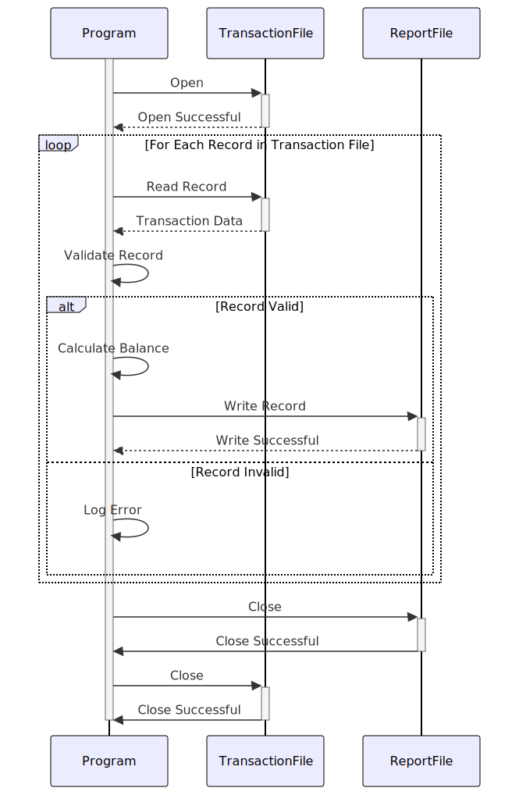

Gerado em: 1º de outubro de 2024
Título do Documento: Especificação do Programa Relatório de Saldo da Categoria de Transação
Descrição Resumida: Este programa extrai, processa e resume informações de saldo da categoria de transação para relatórios financeiros e análise.
Histórias do Usuário: Como analista financeiro, preciso acessar e analisar os saldos das categorias de transações para gerar relatórios financeiros precisos e obter insights sobre padrões de gastos.
Épico Relacionado: 4 - Processamento de Transações
Requisitos Funcionais:
- Extração de Dados:
- Ler registros de transações do arquivo de entrada (
TRAN-CAT-BAL-RECORD).
- Validação de Dados:
- Validar
TRANCAT-ACCT-ID em relação aos registros de contas existentes.
- Validar
TRANCAT-TYPE-CD em relação a uma lista predefinida de tipos de transações válidos.
- Validar
TRANCAT-CD para garantir que esteja alinhado com as categorias de transação definidas.
- Cálculo de Saldo:
- Calcular o saldo para cada combinação exclusiva de
TRANCAT-ACCT-ID, TRANCAT-TYPE-CD e TRANCAT-CD.
- Relatórios:
- Gerar um relatório resumindo o saldo para cada categoria de transação.
- O relatório deve incluir:
- ID da conta
- Código do Tipo de Transação
- Código da Categoria de Transação
- Saldo
Requisitos Não Funcionais:
- Desempenho: O programa deve processar grandes volumes de dados de transações com eficiência.
- Confiabilidade: O programa deve ser confiável e produzir resultados precisos de forma consistente.
- Manutenibilidade: O código deve ser bem estruturado, documentado e fácil de manter.
- Segurança: O acesso a dados financeiros confidenciais deve ser restrito a pessoal autorizado.
Critérios de Aceitação:
- O programa extrai e valida com sucesso os dados de saldo da categoria de transação.
- O programa calcula e relata com precisão os saldos para cada categoria de transação.
- O programa lida com erros normalmente e fornece mensagens de erro informativas.
- O programa atende aos requisitos de desempenho para processamento de grandes conjuntos de dados.
Melhorias de Código:
- Implementar o registro em log para melhor rastreamento e depuração.
- Introduzir tratamento de erros para potenciais inconsistências de dados ou problemas de acesso a arquivos.
- Otimizar o algoritmo de cálculo de saldo para melhorar o desempenho.
- Adicionar comentários ao código para melhorar a legibilidade e a capacidade de manutenção.
Melhorias de Segurança:
- Implementar controles de acesso para restringir o acesso a dados a usuários autorizados.
- Criptografar dados financeiros confidenciais em trânsito e em repouso.
- Registrar todas as tentativas de acesso a dados para fins de auditoria.
Diagrama Conceitual:

–Made by “Smart Engineering” (by Compass.UOL)–